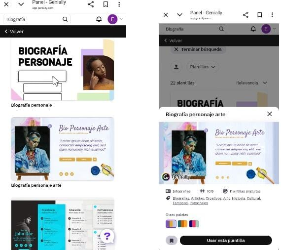

es una plataforma online que permite crear contenidos digitales interactivos y animados como presentaciones, infografias, juegos, imagenes interactivas y mas, sin necesidad de conocimientos de programacion.Es una herramienta versatil que puede ser utilizada para diversos fines, incluyendo educacion, marketing, y comunicacion empresarial.
Genially es una herramienta que permite utilizar plantillas para realizar presentaciones, informes, imagenes interactivas, guias, videos, infografias y otros recursos. 
Genially fue creada por tres socios: Juan Rubio, Chema Roldan y Luis Garcia.

Genially, Mentimeter y Canva son herramientas para la creacion de contenido digital, pero se enfocan en diferentes aspectos. Genially destaca por su interactividad, permitiendo crear presentaciones, infografias y juegos con elementos dinamicos y conexiones entre diapositivas. si buscas contenido dinamico e interactivo, Genially es una buena opcion. Si necesitas crear elementos visuales de forma sencilla y variada, Canva es la herramienta ideal. Y si buscas una herramienta para crear encuestas y obtener feedback en tiempo real, Mentimeter es la mejor alternativa.
ayuda a la comunidad educativa creando experiencias interactivas y atractivas para el aprendizaje. Facilita la creacion de materiales didacticos, como presentaciones, infografias y juegos, que pueden ser utilizados tanto por docentes como por estudiantes. Ademas, Genially fomenta la colaboracion y la participacion, permitiendo que los usuarios compartan sus creaciones y trabajen juntos en proyectos.
REGRESO:)